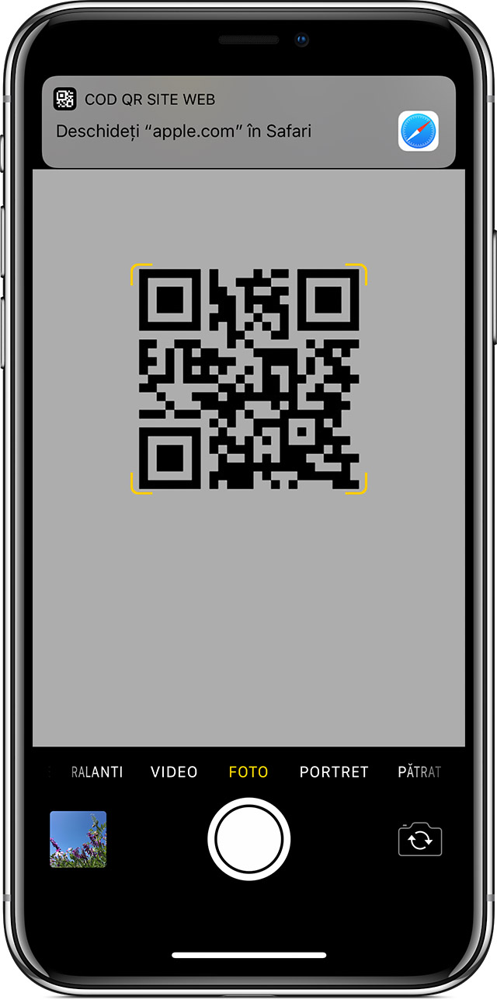
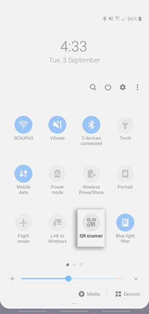
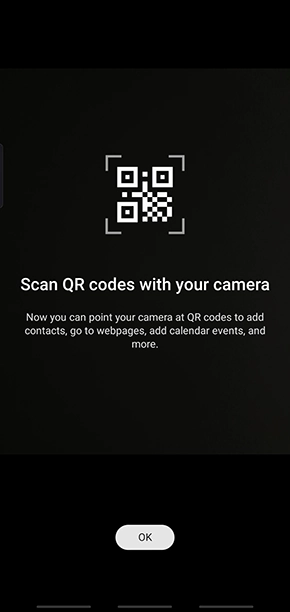
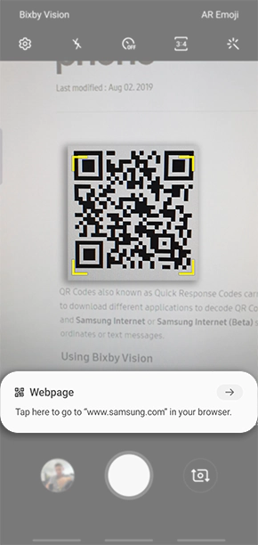
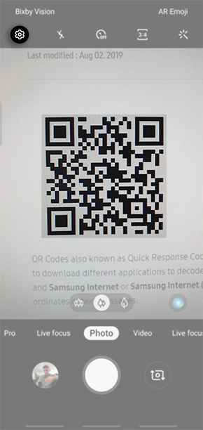
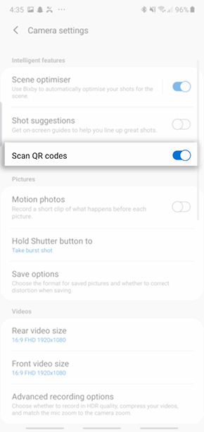

Use your phone as a mouse and keyboard
Enter the next url in the tab of a browser or scan the QR code
If you have an iPhone:
Open the Camera app from the Home screen, Control Center, or Lock screen.
Select the rear facing camera. Hold your device so that the QR code appears in the viewfinder in the Camera app. Your device recognizes the QR code and shows a notification.
Tap the notification to open the link associated with the QR code.

More info at Apple
If you have a Samsung:
1. Swipe down your screen to access your Quick Settings and tap on QR Scanner

2. Tap OK to proceed to the next step

3. The Camera app will then be launched where you can scan QR Code.
Once the QR Code is scanned, you should be able to launch the webpage below.

4. If the QR Code cannot be scanned you may need to enable this setting.
Tap on the Camera Settings icon button.

5. Toggle on Scan QR codes

More info at samsung. Press here
If you have a Huawei:
1. This feature requires an Internet connection. Connect to a Wi-Fi network to avoid incurring unnecessary data charges.
2. Once your Phone is unlocked, swipe down on the home screen to open the HiSearch box, and touch
You can also swipe up from the bottom of the lock screen, and touch to open HiVision.
On the HiVision screen, touch and place the QR code or barcode within the scan frame to acquire information.
More info at Huawei. Press here